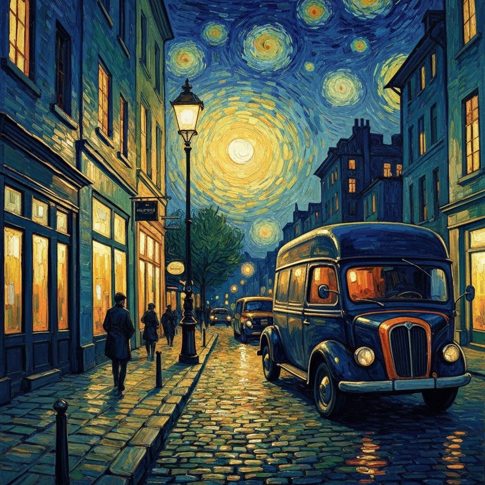
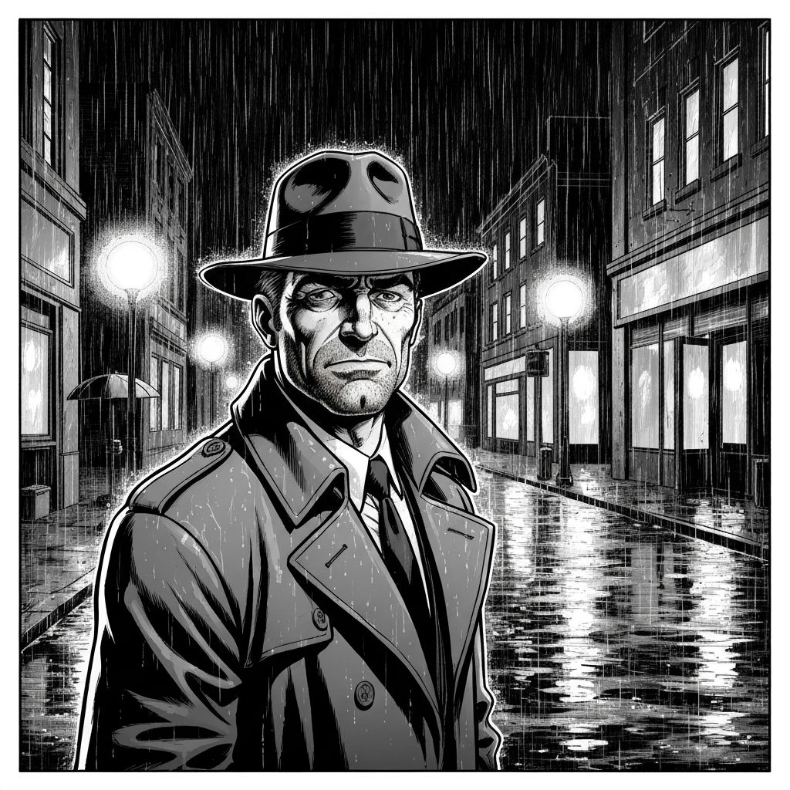
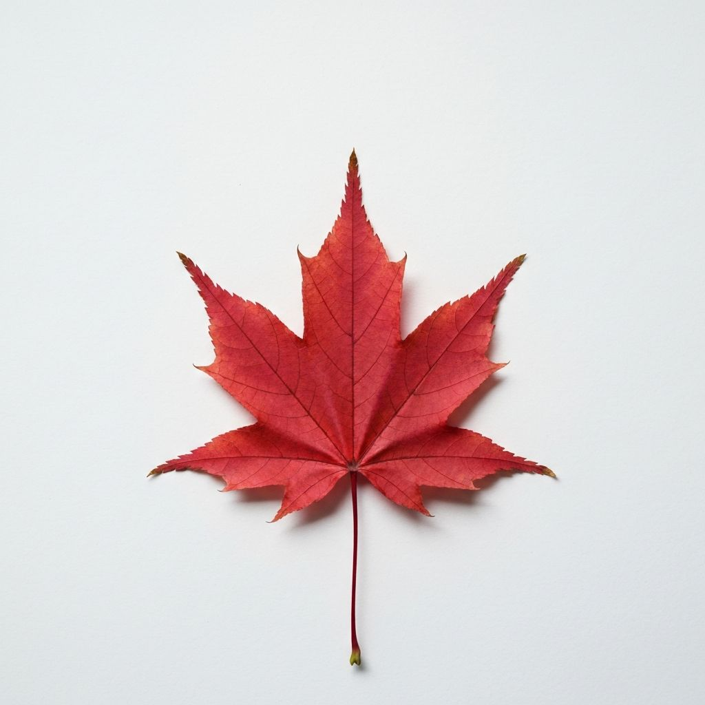

ON AIR
CH.01 · 00:41:07 · SINCE LAUNCH 18,402 FRAMES
An endless AI image channel.
The chat decides what airs next.
A new frame every 15 seconds, generated live with Nano Banana. Vote on the next style — the winner goes on air immediately.

LIVE
FRAME #18402
NEXT IN 15s
VAN GOGH
requested by @mika
city street repainted as a Starry Night oil painting
JUST AIRED
Full archive →What airs next
closes in 15sLive chat
● 312 online
@ryo VOTED CYBERPUNK◆
FRAME #18401 SAVED 47 TIMES◆
@dani REMIXED WITH THEIR PHOTO◆
STYLE "NOIR COMIC" WON 3 ROUNDS IN A ROW◆
1,284 WATCHING FROM 61 COUNTRIES◆
Stop watching, start directing
Every frame here was made with one tool you already have.
The channel runs on the same Nano Banana engine behind our 79 image effects. Drop in your own photo and it airs in the next slot.

